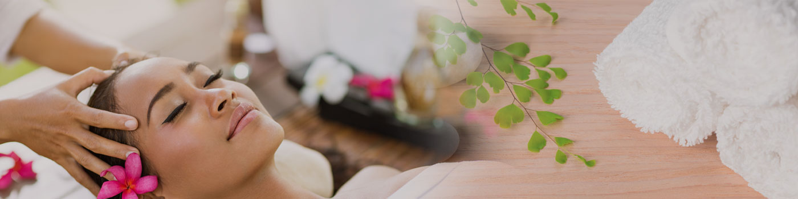

Ayurveda or Ayurvedic medicine is a system of traditional medicine native to India, whichuses a range of treatments, including panchakarma (‘five actions’), yoga, massage, acupuncture and herbal medicine, to encourage health and wellbeing.
A range of Ayurvedic therapies
- Dietary changes
- Herbal medicine, including combining herbs with metals, minerals or gems that can take the form of pellets, tablets and powders of various colours and scents
- Acupuncture
- Massage
- Meditation
- Breathing exercises
- Panchakarma
- Sound therapy, including the use of mantras
- Yoga
Ayurveda practitioners believe their approach is effective in treating a range of disorders, including:
- Anxiety
- Asthma
- Arthritis
- Digestive problems
- Eczema
- High blood pressure
- High cholesterol levels
- Rheumatoid arthritis
- Stress
Special considerations – herbs and rasa shastra medicines
Alongside diet, herbal medicine is central to Ayurveda treatment. Safety issues to consider include:
- Herbal medicines can be as potent as pharmaceutical drugs and should be treated with the same caution and respect. The belief that herbs are safe and harmless may encourage inappropriate use or overdose.
- Most complementary medicines have not been tested on pregnant women, breastfeeding mothers or children and may be harmful.
- Complementary medicines such as herbs can be bought without prescription. However, they may still have side effects, interact with other drugs or treatments, or contain harmful ingredients not shown on the label.
- Products from other countries that are sold over the Internet or brought into Australia from overseas are not subject to the same laws or regulations as those sold in Australia. American research in 2008 found that about one fifth of Ayurvedic products bought online contained dangerous ingredients such as lead, mercury and arsenic in high enough quantities to be considered toxic. Rasa shastra medicines were more likely than herb-only medicines to contain metals or have higher concentrations of metals. Please note that Ayurvedic practitioners may consider these toxic ingredients to be safe.
- Ask for a full list of ingredients of all herbal medicines. If in doubt, check with your doctor. Cases of lead poisoning as a result of taking Ayurvedic treatments imported from India have been reported in Victoria.
- If you are given a preparation by a friend or relative and you cannot identify the origin or ingredients, it is safer not to take it.Never stop taking your conventional medicine or alter the dose without the knowledge and approval of your doctor.
Things to remember
- Ayurveda or Ayurvedic medicine is a system of traditional medicine native to India.
- Treatment options are varied and can include yoga, acupuncture, herbal medicine, massage therapy and dietary changes.
- Cases of lead poisoning as a result of taking Ayurvedic treatments imported from India have been reported in Victoria.
- Always check with your doctor before starting complementary therapies and never stop taking your conventional medicine or alter the dose without the knowledge and approval of your doctor.
Go to HomePage